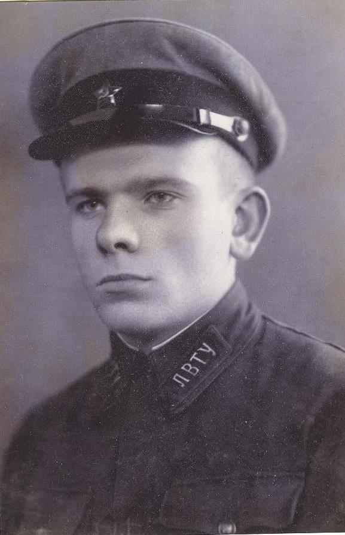
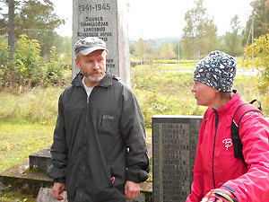

МАЙ 2013 года
В ПАМЯТЬ ОБ ОТЦЕ
В списках захороненных в братской могиле в дер. Елизарово Оленинского района есть фамилия лейтенанта ТЕЭ Оливера Августовича. Родился в 1922 г. в дер. Языковщина Ровенского сельсовета Плоскошского (Торопецкого) района Калининской области. Кадровый военный, лейтенант, командир топо-вычислительного взвода 360 гаубичного артиллерийского полка АРГК. Этот полк в июле 1942 г. входил в состав 29 Армии Калининского фронта. Имя погибшего увековечено на с. 395 10-го тома Книги памяти Тверской области. В областном военкомате хранится учетная карточка захороненного, оформленная на основании так называемой «распечатки ЦАМО РФ». Приказом Начальника Главного управления комплектования и формирования войск № 0959/НР от 22 октября 1942 г. Оливер Августович исключен из списков Красной Армии как пропавший без вести.
В последних числах марта, нам пришло письмо из Эстонии от его внука Эдуарда Теэ, который написал:
«На наше счастье дедушка остался жив. Если бы информация о гибели была правдой, то конечно не было бы троих сыновей, шести внуков и многих правнуков.
Дед прошёл через многое, был плен, лагеря, судьбоносный побег в 1944 году во время боев за освобождение Таллина. Благо от серьёзных репрессий его спасло, вероятно, образование. После плена был направлен на строительство дорог в Ленинградской области.
Дедушка умер 2 августа 1999г. Похоронен 5 августа на кладбище Рийгикюла в городе Нарва, уезд Ида-Вирумаа, волость Вайвара. Многие подробности его биографии ушли вместе с ним. Человеком он был скромным и трудолюбивым, делиться о прошлом не любил. Что-то по крупицам знаем про его военные скитания, но не так много, как хотелось бы! Поэтому для всей нашей семьи, та информация, что размещена на вашем сайте, конечно, очень много значит! Особенно для моего отца, сына Оливера Августовича, Олега Оливеровича Теэ, майора РВ СН, который после распада Союза посвятил своё свободное время ухаживанию за воинскими захоронениями времён войны, расположенными на территории Эстонии и помощи ветеранам Великой Отечественной войны.
И, конечно, хотелось бы больше узнать о судьбе деда Оливера Августовича, но понятное дело, что для этого, скорее всего, нужна работа в военных архивах. В любом случае, спасибо большое! Кто его знает, может быть через какое-то время, откроются ещё какие-то подробности его судьбы! Успехов вам в вашей работе».
Бывает и такое. И это далеко не первый случай в практике нашей работы, когда учтенные по документам ЦАМО РФ, увековеченные в Книгах Памяти как погибшие, умершие от ран и болезней, пропавшие без вести воины, на самом деле возвращались с войны, продолжали жить и трудиться, растить детей и внуков. И особые чувства испытываешь к таким из них как лейтенант ТЕЭ О.А., воспитавших достойных себе потомков.
 Как удалось выяснить из дальнейшей переписки, сын лейтенанта ТЕЭ, Олег Оливерович, закончил Ростовское высшее военное училище Ракетных войск стратегического назначения, проходил службу в Красноярском крае, был начальником штаба ракетного полка. В конце 80-х годов его, как и других офицеров-эстонцев, перевели на родину. Олег Теэ — уроженец Нарвы, там и в армию призывался.
Последняя его воинская должность — военный комиссар Выруского района. Однако даже минимальной пенсии он не заслужил — не хватило двух лет стажа. Когда с развалом Союза прекратил существование и Выруский военкомат, он уволился из армии. Но по-прежнему считает себя офицером: «Офицер может быть в запасе или в отставке, но только не бывшим. И всегда должен служить, даже если форма висит в шкафу».
Семь лет тому назад, уже будучи «на гражданке», возглавил ветеранскую общественную организацию «Рубин» в одном из районов Таллина – Ласнамяэ. Каждый год накануне Дня Победы «Рубин» приглашает ласнамяэских ветеранов войны в КЦ «Линдакиви» на праздничный прием. Это единственный район в городе, где собирают и чествуют ветеранов.
В память о теперь уже покойном отце и о воинах Советской армии, благодаря которым он был освобожден, Олег Теэ взял на себя миссию ухаживать за захоронениями воинов Советской армии, погибших во время Великой Отечественной войны в Эстонии. Это основная деятельность возглавляемой им общественной организации «Рубин». Члены объединения ветеранов военной службы «Рубин» убеждены, что обязаны ухаживать за захоронениями советских воинов, погибших на территории Эстонии, потому что служили с ними в одной армии.
 Всего на территории Эстонии находится 248 таких захоронений, где покоятся останки 81 541 военнослужащего. Личности 38 300 из них известны, 43 241 – безымянные. Олегу Теэ эти цифры известны еще с конца 80-х годов, когда он был военным комиссаром Выруского района. «У меня сохранился рапорт от 1989 года военкому республики о состоянии воинских захоронений в Выруском районе, - говорит Олег Теэ. - Так что сейчас я как бы продолжаю заниматься тем же. Только теперь уже в свободное от работы время, в выходные дни». Всего на территории Эстонии находится 248 таких захоронений, где покоятся останки 81 541 военнослужащего. Личности 38 300 из них известны, 43 241 – безымянные. Олегу Теэ эти цифры известны еще с конца 80-х годов, когда он был военным комиссаром Выруского района. «У меня сохранился рапорт от 1989 года военкому республики о состоянии воинских захоронений в Выруском районе, - говорит Олег Теэ. - Так что сейчас я как бы продолжаю заниматься тем же. Только теперь уже в свободное от работы время, в выходные дни».
Почти каждые выходные с мая по сентябрь Олег Оливерович и его соратники по «Рубину». выезжают в разные районы Эстонии, восстанавливают и ремонтируют памятники и мемориальные плиты, убирают и обустраивают территории воинских захоронений. Делают и ещё одну очень важную работу – ведут сбор документов, которые содержат персональные сведения о воинах, погибших и захороненных в Эстонии. Данные о местах захоронения и увековечения этих воинов пока в ОБД-Мемориал не выложены. А ещё председатель правления «Рубина» офицер, сын офицера, Олег Теэ создает уникальный альбом, посвященный воинским захоронениям в Эстонии.
Короткий фильм об этой общественной работе ТЕЭ О.О. можно посмотреть здесь: http://www.youtube.com/watch?v=xBLt5NaLhMg |

|
ПОИСК СВЕДЕНИЙ О ВОИНАХ, НЕ ВЕРНУВШИХСЯ С ФРОНТА
Появление современных интернет-ресурсов и технологий, открывающих доступ к персональным сведения жертв Второй мировой войны буквально всколыхнуло огромные массы их родственников, пытающихся установить фронтовые судьбы погибших и пропавших без вести воинов, найти места их гибели и захоронения. Предлагаем познакомиться с рекомендациями, выполнение которых позволит получить максимальный результат в поиске. Они составлены специалистами, занимающихся поисковой работой уже не один десяток лет.
Начните поиск с опроса всех здравствующих родственников. Помните, что любая мелочь или самая неожиданная семейная легенда могут оказаться ключом к открытиям или хотя бы указать направление поисков. Очень важные сведения часто содержатся на обратных сторонах военных фотографий и в письмах, например, в их почтовых штемпелях, оттуда нужно выписать дату отправки письма и номер полевой почты.
Если Вы не нашли своего родственника в Обобщенном Банке Данных "Мемориал" МО РФ (обратите внимание на сайте www.obd-memorial.ru на закладку "Дополнительный поиск по списку военно-пересыльных пунктов", он ведется отдельно) и Общедоступном электронном банке документов "Подвиг народа" МО РФ или найденная информация не дала ответа на Ваши вопросы, советуем Вам сделать запросы в следующие инстанции:
- В Центральный архив Министерства обороны РФ по адресу: 142100, Московская область, г. Подольск, ул. Кирова, 74 (хранит документы Вооруженных Сил с 1941 г. по настоящее время.). Ответ будет получен быстрее, если оставить запрос в приемной ЦАМО (это может сделать родственник разыскиваемого или доверенное лицо родственника).
- Военкомат по месту призыва, с просьбой указать кроме прочих сведений о судьбе разыскиваемого и № воинской части, в которую он был направлен по призыву и откуда получено извещение о гибели или пропаже без вести.
- Информация о невернувшемся с войны может быть также в Книгах Памяти регионов по месту его рождения, жительства, призыва и гибели, иногда в нескольких одновременно. Поэтому стоит постараться изучить все необходимые книги, отправить запросы в редакции Книг Памяти этих регионов. Книги Памяти всех регионов бывшего СССР хранятся в Музее Великой Отечественной войны на Поклонной горе в Москве, там же имеется и компьютерная база данных. Книги Памяти многих регионов РФ выставлены в Обобщенном Банке Данных "Мемориал" МО РФ.
- Попробуйте обратиться в Отделение Пенсионного Фонда РФ по месту получения пенсии членами семьи погибшего, в архиве которого может сохраниться извещение, на основании которого семье выплачивалась пенсия, в нем может быть информация о номере воинской части и даже о месте гибели.
- Сведения о ранениях можно получить в Архиве военно-медицинских документов Военно-медицинского музея МО РФ, по адресу: 191180 г.Санкт-Петербург, Лазаретный пер., 2 (писать туда стоит даже если Вы не уверены, имел ли разыскиваемый ранения).
- Сведения о судьбе военнослужащих частей Военно-Морского Флота, в том числе и береговой обороны можно получить в Центральном военно-морском архиве МО РФ (ЦВМА МО РФ), по адресу: 188350, Ленинградская область, г.Гатчина, Красноармейский пер., 2.
- Сведения о судьбе военнослужащих частей пограничных войск можно получить в Центральном Архиве Федеральной пограничной службы РФ (ЦА ФПС РФ), по адресу: 143413, Московская область, г.Пушкино, а также в Российском государственном военном архиве (РГВА), по адресу: 125212, г.Москва, ул.Адмирала Макарова, 29.
- Сведения о судьбе военнослужащих НКВД можно получить в Российском государственном военном архиве (РГВА), по адресу: 125212, г.Москва, ул.Адмирала Макарова, 29.
- Сведения о судьбе военнослужащих, пропавших без вести за период боевых действий у р.Халхин-Гол в Монголии, а также в период советско-финляндской войны 1939-1940 гг. можно получить в Российском государственном военном архиве (РГВА), по адресу: 125212, г.Москва, ул.Адмирала Макарова, 29.
- За подтверждением предположений, что разыскиваемый Вами военнослужащий мог попасть в плен, можно обратиться в следующие инстанции:
- Международная Служба Розыска Красного Креста в городе Арользен (Гроссе Аллее 5-9, 34444 Арользен, Германия (Grosse Allee 5-9, 34444 AROLSEN, Bundesrepublik Deutschland)).
- Центр розыска и информации Российского общества Красного Креста (ЦРИ РОКК) 117036, Москва, Черемушкинский проезд, д.5. Телефон: 1267571, факс: 2302867, 1264266.
- Государственный архив по довоенному месту жительства и месту рождения разыскиваемого (Многие из региональных государственных архивов приняли на хранение из территориальных органов Федеральной службы безопасности РФ фильтрационно-проверочные дела на бывших военнопленных).
- Государственный архив Российской Федерации (ГАРФ): 119817, г.Москва, ул.Бол. Пироговская, 17
- Центральный архив Министерства Обороны РФ (ЦАМО РФ): 142100, Московская обл, г. Подольск, ул. Кирова, 74 (с формулировкой: «просим подтвердить нахождение в плену во время Великой Отечественной войны»).
- Главный информационный центр МВД РФ (ГИЦ МВД РФ) 117418, г.Москва, ул.Новочеремушкинская,67. Центр реабилитации жертв политических репрессий и архивной информации.
- Информационный Центр МВД региона по довоенному месту жительства и месту рождения разыскиваемого.
- Управление ФСБ РФ по довоенному месту жительства и месту рождения разыскиваемого.
- Центральный архив ФСБ РФ: 101000, г.Москва Центр, Лубянка.
В интересах защиты прав личности сведения о бывших военнопленных выдаются только лицам, о которых идет речь в запросе, или их непосредственным родственникам. Запрос должен быть заверен подписью заявителя.
- За справкой о нахождении в партизанском отряде рекомендуем обратиться в областной Государственный архив по месту действия партизанского отряда.
- За подтверждением сохранности могилы воина в конкретном населенном пункте, наличия его имени в списках похороненных нужно обращаться в военкомат этого района, администрации населенных пунктов.
- Выяснение сохранности могил российских воинов, погибших, умерших в плену и захороненных за границей, на основании официального документа (извещения о гибели, справки ЦАМО РФ), в котором говорится о дате гибели и месте захоронения, входит в компетенцию Центра розыска и информации Российского Общества Красного Креста (117036, Москва, Черемушкинский проезд, д.5, Телефон: 126-7571, факс: 126-4266, mail@redcross.ru). Кроме того, вся официальная информация о воинских захоронениях за границей находится в Управлении Министерства Обороны РФ по увековечению памяти погибших при защите Отечества: 119160, г.Москва, Фрунзенская наб., д.22/2, e-mail: vmcvsrf@front.ru.
|
|
|